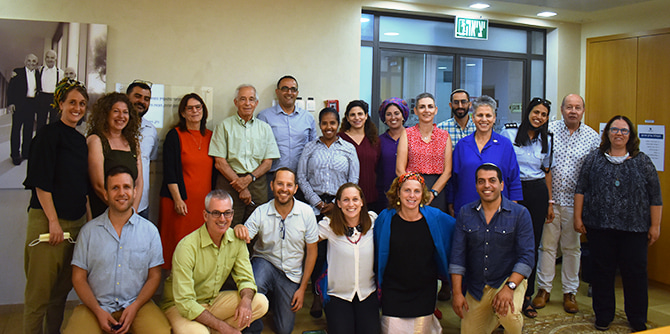

During Professor Jehuda Reinharz’s visit to Israel in May, , the fellows of the Mandel Program for Regional Leadership in the Gaza Border Communities were treated to a fascinating meeting with him on the leadership challenges that face the communities of the region, especially during times of emergency.
The meeting with the president of the Jack, Joseph and Morton Mandel Foundation was preceded by two extremely difficult weeks of rocket attacks in the region, an experience that had deeply affected each of the program’s fellows in different ways. Working in various professional fields related to society and community in the five local authorities that make up the Gaza Border region, the fellows had faced a complex emergency situation during Operation Guardian of the Walls, which affected them on multiple levels – personal, communal, and professional.
Photo: Shlomi Amsalem
The meeting, which was held on the day that the group returned to in-person sessions at the Mandel Center for Leadership in the Negev after a period of learning from afar, was opened by the Center’s director, Dr. Adi Nir Sagi, who laid out the goals of the two-year program. Dr. Rotem Bresler-Gonen, the program’s director, then described the main principles guiding the fellows’ first year of study.
Next, the fellows presented their areas of activity and discussed the changes that are necessary in the Gaza border communities of the Western Negev. The difficult experiences that had characterized the recent weeks provided a backdrop for these discussions. The fellows described their professional backgrounds, and particularly the roles they fill during times of emergency. The fellows include professionals in the fields of welfare, health, and youth work, and all perform significant acts of leadership during times of crisis, acts that stem from a deep commitment to helping local populations in meaningful ways.
The meeting concluded with a short address by faculty member Dr. Gili Zivan, who spoke about the beit-midrash-style learning that opens each day of study in the program and explores questions of leadership through analysis of the Biblical figure of Moses.
The meeting with Professor Reinharz was very meaningful for the program fellows, particularly at this time, as it gave them an opportunity to shine a light on their activities in the local authorities of Sderot, Sha’ar Hanegev, Eshkol, Hof Ashkelon, and Sdot Negev. Together, these activities are achieving regional impact, and reflect a regional approach to leadership, which aims to improve the quality of life for all Gaza Border residents. For the fellows, this is 21st-century Zionism.

Photo: Shlomi Amsalem
Professor Reinharz, who has not experienced daily life in the Western Negev, displayed great interest in what the fellows had to say, asking questions and seeking to gain an understanding of LETs (local emergency teams), post-trauma in the region’s children, and more. Despite the harsh background provided by the recent round of fighting, the discussion was optimistic and hopeful.
The meeting emphasized the importance of the Mandel Program for Regional Leadership in the Gaza Border Communities as a framework for in-depth thinking, learning, and action for the fellows, who serve as a significant leadership force – in normal times, and especially during emergencies.
{kind=link}
{kind=link}